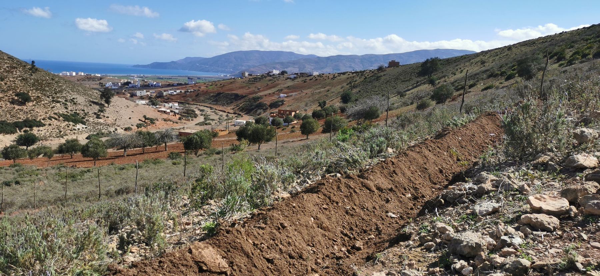
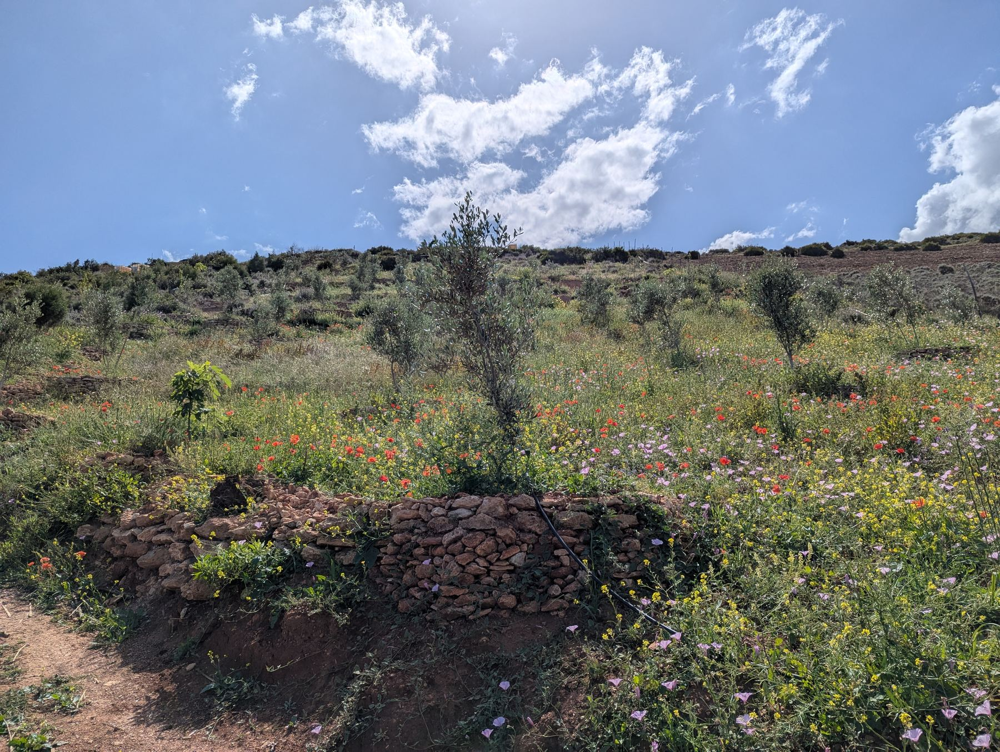

From degraded hillside to living landscape.
In 2022, a severely degraded hillside near a rural village in northern Morocco was acquired with one purpose: to prove that damaged land could come back to life. The land had suffered years of overgrazing, erosion, and declining biodiversity.
The first goal was not to build accommodation. It was to restore a relationship with the land. Through patience, observation, permaculture principles, and continuous care, the hillside has gradually transformed into a diverse living ecosystem.
Today, one permanent worker maintains the land and its systems day to day, with additional help brought in during planting seasons and larger projects.



2022: overgrazed, eroding, and low in biodiversity. Today: 600+ trees established, native vegetation and pollinators returning, permaculture systems in place.